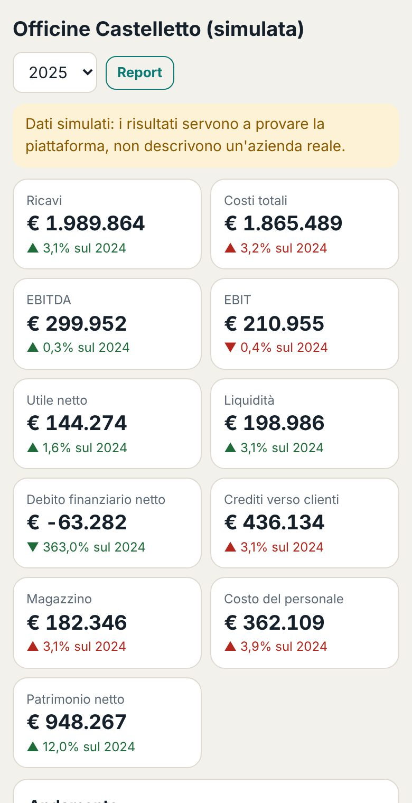
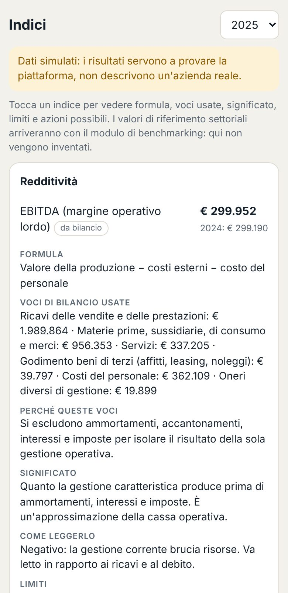
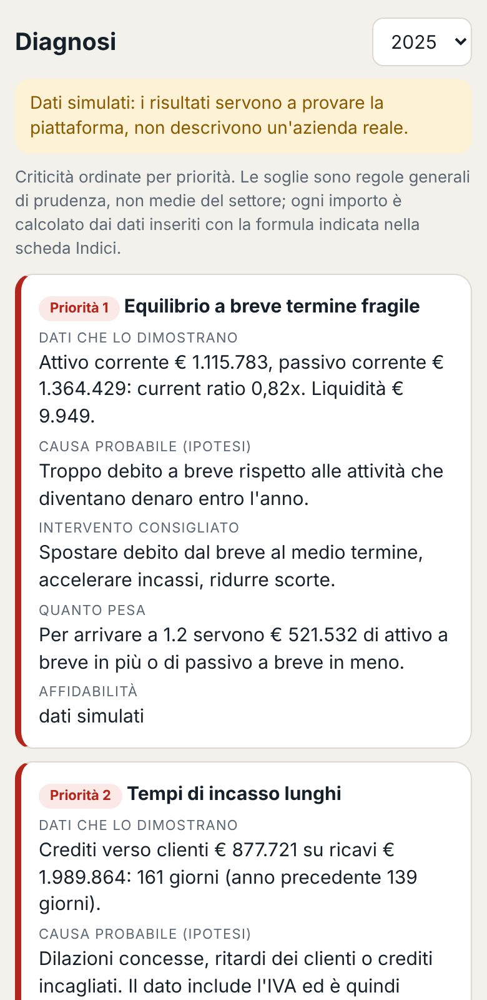
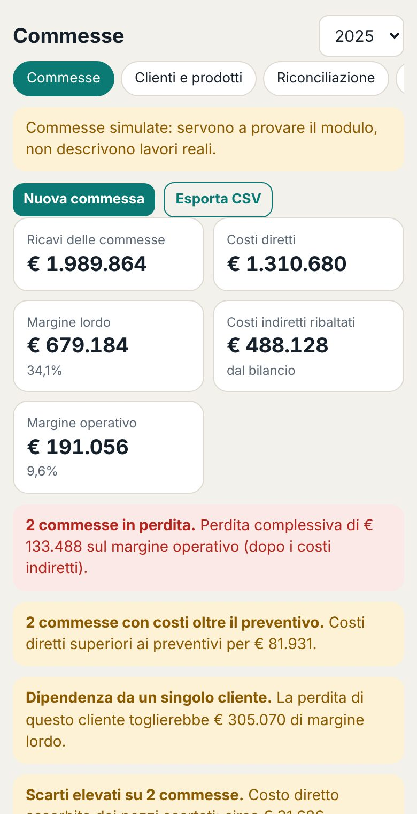

Come provarlo
Il modo più prudente è usare un'azienda di fantasia, creata dall'app.
Fai la prima prova con dati simulati. Non caricare bilanci o dati veri finché non hai capito come funziona e dove vengono salvati (vedi I tuoi dati).
La prova avviene su richiesta: ti indichiamo come accedere quando ci scrivi.
Il percorso
- Apri Timone.
- Dalla schermata iniziale premi «Apri la simulazione». Se hai già delle aziende, apri la voce «Simulazione» del menu.
- Scegli il settore e la situazione (per cominciare: Manifatturiera e «Azienda in equilibrio»).
- Premi «Crea azienda simulata».
- Guarda Cruscotto, Indici e Diagnosi.
I dati sono di fantasia e i parametri di settore non sono medie reali.
Come appare
Schermate vere con un'azienda di fantasia.




Vuoi vederlo in azione?
Vuoi una prova guidata? Scrivici: la facciamo insieme, con dati simulati.